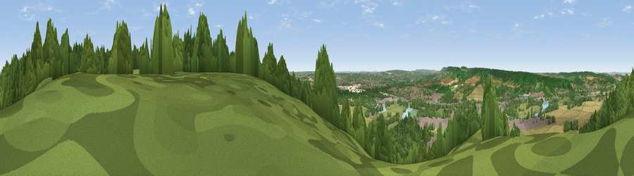

Viewpoint near Wouldham
#23638 in England · top 14% of its area beats it · near WouldhamWhere it is
The exact computed spot (TQ 72475 63475). Click the marker for map links.
The view, rendered

A 360° render of this exact spot computed from the terrain model, tree cover and land cover — summer colours, afternoon light, calibrated against photographs of famous viewpoints. Real trees, hedges and buildings will differ in detail.
The panorama
Grey silhouette: terrain skyline in each direction (720 bearings, Earth curvature and refraction included). Dashed green: skyline with trees (+15 m) and buildings (+8 m) as obstacles. Blue strip: how far the ground is visible on each bearing.
Where the view opens
Wedge length = distance to the farthest visible ground on that bearing (vegetation-aware). Rings at 10, 25 and 50 km.
What fills the view
52% woodland · 19% cropland · 19% grassland · 7% built-up · 2% water
Angular shares of the visible panorama (visual magnitude), not map area. Landscape diversity 0.55 (0–1 Shannon).
Key numbers
More beautiful places nearby
The staircase of upgrades: each row has a higher view potential than everything closer. Driving times are estimates from straight-line distance, calibrated against real road routing — check an actual route before setting out.
| Place | Direction | Drive | Score |
|---|---|---|---|
| Viewpoint near Burham | SSE · 1 km | ~2 min | 52.1 |
| Viewpoint near Bluebell Hill | SE · 3 km | ~8 min | 54.6 |
| Viewpoint near Bluebell Hill | SE · 4 km | ~10 min | 60.9 |
| Viewpoint near Birling | W · 6 km | ~12 min | 65.1 |
| Viewpoint near Shipbourne | WSW · 19 km | ~32 min | 66.2 |
| Viewpoint near Charing | ESE · 26 km | ~41 min | 68.6 |
| Viewpoint near Westwell | ESE · 30 km | ~47 min | 72.2 |
| Viewpoint near Lympne | SE · 47 km | ~67 min | 72.6 |
51.34419, 0.47505 · source: screening · position refined by local search. Computed location — check access rights before visiting.